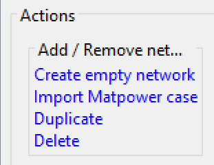
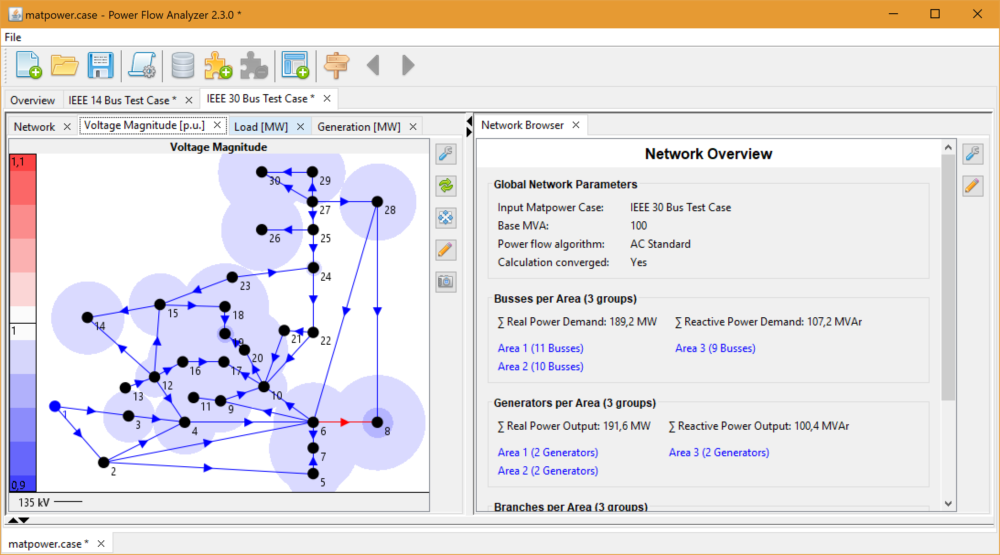

Getting Started
Download and Start
Download the current release from Github and unzip the file. A new folder PowerFlowAnalyzer-<VERSION> will be created. The final name is version dependant (e.g. PowerFlowAnalyzer-2.3.0).
Open the newly created folder and execute the start script in Matlab:
>> pfa_start_application.m
The graphical user interface (GUI) will open in a new window:

Open an example project
Click the  button on the toolbar. A new window will open.
button on the toolbar. A new window will open.
Select or enter the path to the project file <PATH TO PFA>/examples/matpower/matpower.case of your PFA installation. Click OK.

Select the item IEEE 14 Bus Test Case in the Overview area on the left side. The item will be highlighted. A network summary similar to Matpower will be show:

You can change the name of a network and add a description in the Network information tab:

By double clicking an item in the Overview area, the network will be shown:
The user interface offers basically three different visualisation types for network data:
- network maps drawing grid topology data and heat maps
- network browsers allowing to explore data in a hyperlink like style
- data tables listing specific elements and their parameters
Selecting an item in a visualisation will update all other visualisations to reflect the current selection.
Compute power flow with Matpower
Click the button on the toolbar. A dialog will open and show the available scripts. Click on 2. Calculate Power Flow.

The script parameter dialog will show up. Select AC Standard as the power flow algorithm. Click OK.

This particular script will perform the following actions:
- convert network data into the Matpower case format
- compute power flow using Matpower functions
- convert calculation results into network data
- update user interface
Take a look at the Matlab console to view the logging output of the PFA and Matpower functions.
Click on one of the red dots in the network viewer to see which constraint was violated:

Load other IEEE Test Cases
Switch back to the Overview panel and select the action Create empty network:

Now execute the script 1. Import Matpower Case:
The script parameter dialog will show up. Select an input Matpower case (e.g. IEEE 30 Bus Test Case). Click OK.
Select the newly created network in the list, change its name and view it by double clicking on it's list item.

Grouping assets by specific models or parameters may reduce significantly the information shown in the user interface. Take a look at the bus section in the Network Overview:

Clicking on one of these items will select/highlight the items in this group: